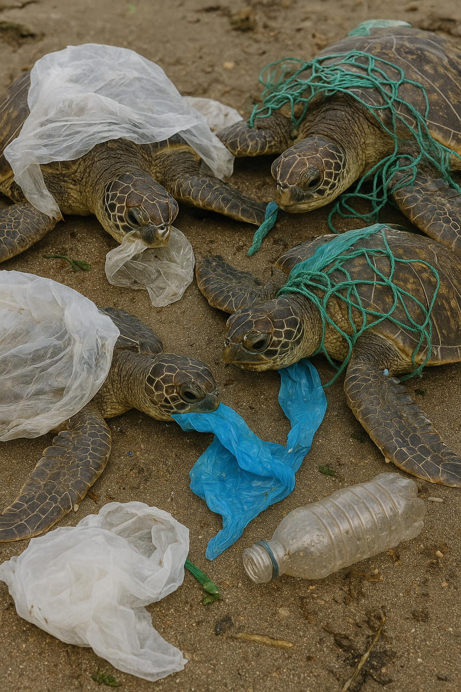
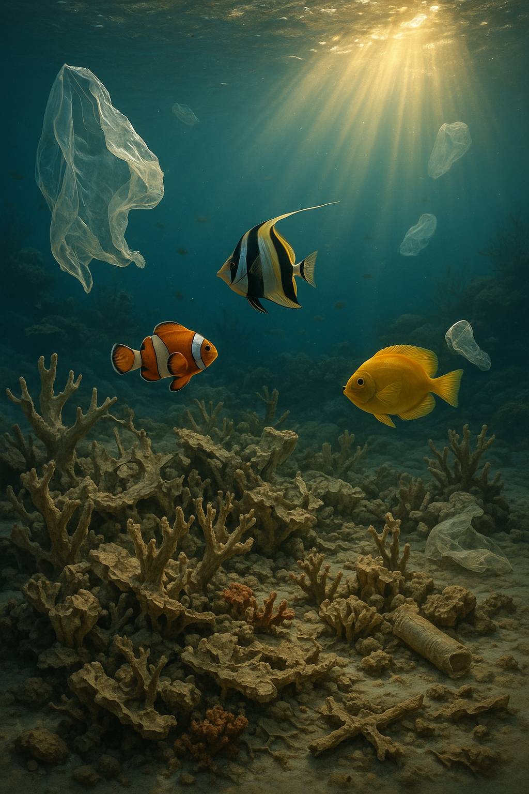
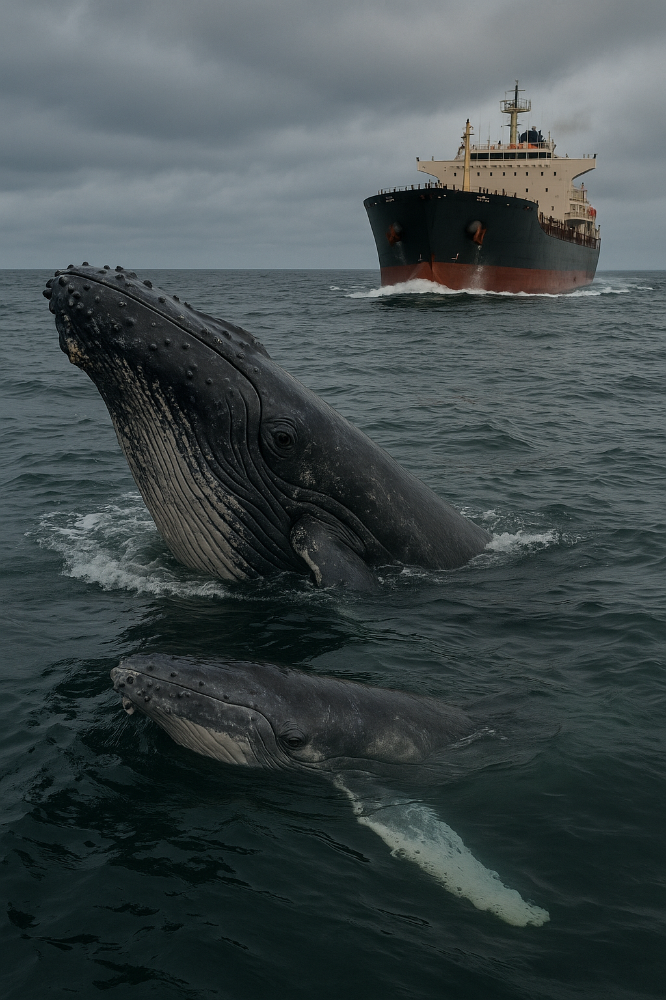
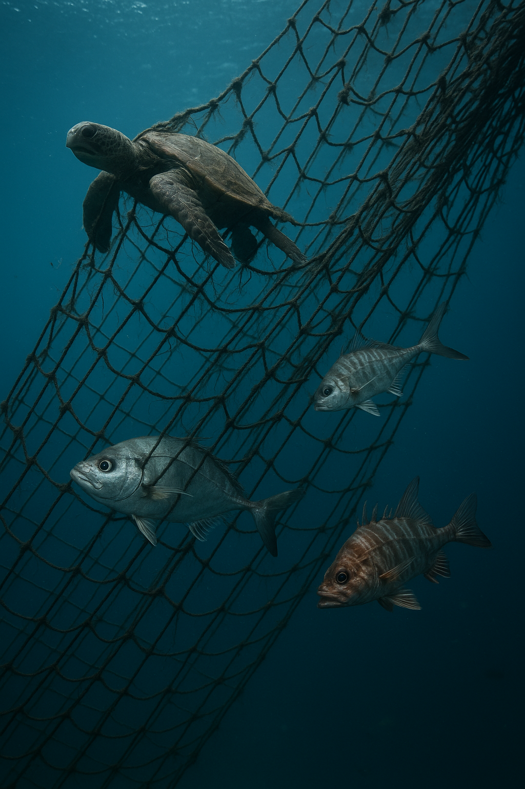
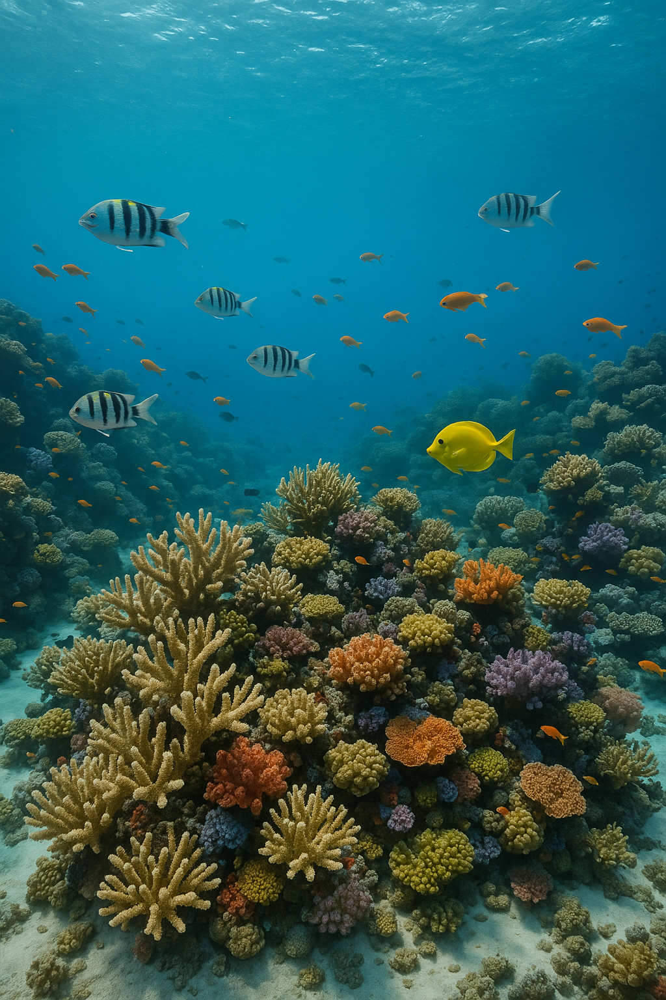
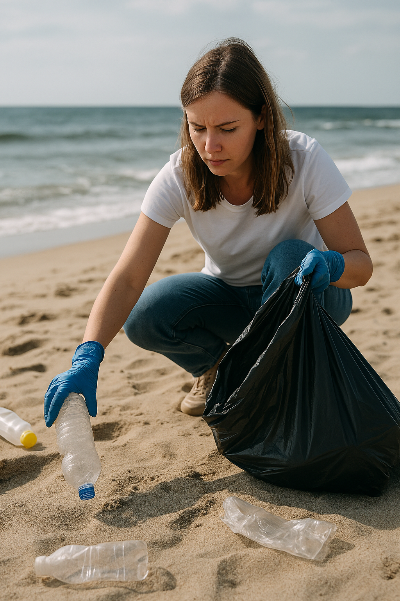

Poluição por plásticos
Plásticos fragmentam e entram na cadeia alimentar; grandes animais morrem ao ingerir ou se enroscar. Reduzir, reutilizar e recolher lixo são ações diretas.
Uma aventura pelo mar para conhecer os animais marinhos, entender as ameaças aos oceanos e aprender o que podemos fazer.
Aqui você encontrará curiosidades surpreendentes, fatos científicos e sugestões práticas para cuidar do oceano.

Fatos que vão surpreender você — curta leitura rápida e visual.
Três pontos que explicam os riscos e o que a ciência diz.
Plásticos fragmentam e entram na cadeia alimentar; grandes animais morrem ao ingerir ou se enroscar. Reduzir, reutilizar e recolher lixo são ações diretas.
Oceanos mais quentes e ácidos prejudicam corais e ovos de peixes, afetando ecossistemas inteiros. Mitigar emissões e conservar habitats ajuda a aumentar resiliência.
Pesca excessiva e arrasto destroem recifes e leitos de algas. Práticas sustentáveis e áreas marinhas protegidas recuperam populações e abrigo para espécies.
Imagens impactantes que mostram a beleza e as ameaças aos oceanos. Clique para aumentar.






Respostas curtas para ajudar no entendimento e na ação.
Reduza o uso de plástico descartável, participe de limpezas, descarte resíduos corretamente e apoie políticas locais de coleta seletiva.
São redes e apetrechos perdidos/descartados que continuam capturando animais. Apoiar pesca responsável e recolher equipamentos perdidos ajuda a minimizar o problema.
Recifes são berçários marinhos que sustentam grande biodiversidade, protegem costas de erosão e ajudam na pesca local sustentável.
National Geographic — "Oceans and the threats they face". • IFAW — "Threats to marine wildlife". • IERE — "Ocean Conservation: Protecting Our Marine Ecosystems".